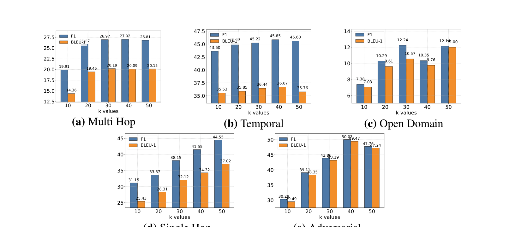

PaperPulse
Evidence-first paper reading
论文摘要不难。
难的是，把证据
一起带回来。
把本地论文 PDF 转换成有主线、有原文图表、有研究判断的中文简报。
原文 Figure / Table
中文深度解读
可分享 HTML

The reading gap
从密集 PDF，
到能读完、能核验的解读。
Before · Paper PDF
After · PaperPulse brief
PAPER NOTE · TL;DR
别再把 Agent 的记忆当数据库了
A-MEM 让记忆不只被存储和检索，还能主动建立联系、更新旧经验。

参数敏感性实验 · 原文图表证据
One skill · complete workflow
一句话启动，
一条链路交付。
01
读取 PDF
提取论文正文，保留标题与链接信息。
02
定位证据
识别 Figure、Table 与邻近上下文。
03
选择关键图
围绕方法、结果和限制筛选证据。
04
写成简报
组织中文叙事，并给出研究判断。
05
渲染与验收
生成 HTML，检查元数据、图片与版式。
脚本负责稳定提取，Codex 负责真正需要判断的部分。
Real operation
现在，看它真实跑一次。
LIVE WORKFLOW
真实操作视频插入位
录制一次完整流程：把 PDF 交给 PaperPulse，展示正文与图表提取，再打开最终 report.html。视频加载后，本页会自动按真实时长播放并切到下一幕。
paperpulse-operation.mp41920×1080 · H.264 MP4 · 建议 20–45 秒
From evidence to deliverable
不是一段回答。
是一份可继续使用的成果。

一份简报，
五种可追溯产物。
原始依据、候选证据和最终成品彼此分离，方便核验、编辑与分享。
source_text.md清理后的论文正文captions.json图表标题与上下文images/原文 Figure / Tablereport.md可继续编辑的中文简报report.html可直接分享的阅读页面Why it is different
更快，但不以牺牲可信度为代价。
01 / EVIDENCE
关键结论带着原文图表
方法图、结果表和消融实验来自论文 PDF，而不是重新生成的示意图。
02 / TRACE
每一步都有依据可回查
正文、图表上下文与最终报告分别保存，重要判断可以回到来源。
03 / REVIEW
自动化之后还有验收
检查裁剪完整性、元数据、图片引用和最终版式，不把“生成完成”当成“交付完成”。
13份公开样例1个本地 PDF 输入5类可追溯产物
PaperPulse
把下一篇论文，
交给PaperPulse。
github.com/w1ndz321/paperpulse-skill
开源 Codex Skill · 中文深度解读 · 原文图表证据
扫码访问 GitHub
查看安装方式、真实样例与完整工作流